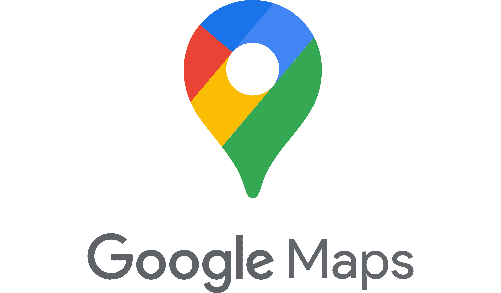

MY TOP 5 WEBSITES
Ang YOUTUBE ay isa sa mga pangunahing site na madalas ginagamit ng mga tao upang makapanood at matuto ng kung ano man ang gusto nilang gawin, at ito ang madalas gamitin ng mga estudyante dahil nakatutulong ito sa kanilang pag aaral

Ito ang nagsisilbing Online diary ng mga Artista o Celebrity at ang mga karaniwang tao, dito nila madalas ipinapahayag ang kanilang mga saloobin, o dito sila nag po-post ng hindi nakikita ng iba
Ito ang ginagamit ng mga studyante at guro at mga individual upang gamitin pang komunikasyon at makapanood ng video at makahanap ng mga kaibigan, makatutulong din ito upang mahanap ang mga taong nais mong hanapin
Ito ang ginagamit ng mga tao upang makita ang lugar na gusto nilang puntahan at gusto nilang makita, Pinili ko ito dahil ito ang lagi kong gamit kapag nag nanavigate ako ng isang lugar upang makuha ang mga bagay na nais ipadala ng mga tao sa lalamove
Dito madalas ginagamit ang mga transakyon ng mga tao at pag kumpirma ng mga impormasyon, katulad sa mga kumpanya o ang pag aapply sa mga trabaho,is a free Web-based e-mail service that provides users with a gigabyte of storage for messages and provides the ability to search for specific messages. The Gmail program also automatically organizes successively related messages into a conversational thread. .